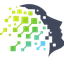

Statistical physics × machine learning
Dario Bocchi
PhD · Sapienza University of Rome
Incoming postdoc · ENS Paris

I'm a theoretical physicist working where statistical mechanics meets machine learning. I use tools from the physics of disordered systems and random matrix theory to understand how neural networks learn: the geometry of their loss landscapes, the dynamics and implicit biases of gradient descent, and the origin of neural scaling laws.
I'm completing my PhD at Sapienza University of Rome, and I will soon join the École Normale Supérieure in Paris as a postdoctoral researcher.
Path
-
NextPostdoctoral researcherÉcole Normale Supérieure, Paris
-
2023 – 2026PhD in Theoretical PhysicsSapienza University of RomeLoss Landscape Instabilities and the Emergence of Weight Structure in Neural Network Training
-
2021 – 2023MSc in Theoretical PhysicsSapienza University of RomeBeyond Hopfield models: from structured synthetic datasets to real images
-
2018 – 2021BSc in PhysicsUniversity of TurinUnsupervised machine learning techniques for cosmic electron selection in Fermi-LAT data
-
2013 – 2018Scientific high schoolLiceo “Galileo Ferraris”, Turin
Selected research
-

No matching items
News
- Nov 2026Escape dynamics and implicit bias of one-pass SGD published in Machine Learning: Science and Technology.
- Oct 2026New preprint: Generalization properties of the token perceptron, on how the geometry of token embeddings shapes learning.
- Jun 2026New preprint: Spectral phase transitions and trainability in neural network learning dynamics.
- Jun 2026At the Beg Rohu Summer School on optimization and control of nonequilibrium systems.
- Apr 2026Two papers at ICLR 2026 in Rio de Janeiro, one selected for an Oral.
- Apr 2026Two new preprints: Discontinuous BBP transitions and Escape dynamics of one-pass SGD.
- Jan 2026Contributed talk at the 4th Workshop of the UMI group “Mathematics for AI and Machine Learning”.